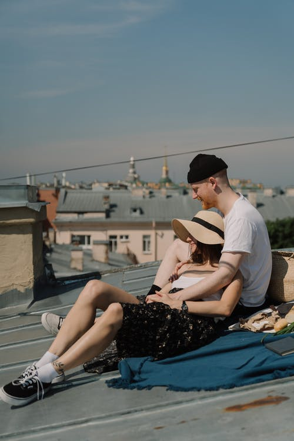

<!DOCTYPE html>
<html lang="en">
<head>
    <meta charset="UTF-8">
    <meta name="viewport" content="width=device-width, initial-scale=1.0">
    <link rel="preconnect" href="https://fonts.gstatic.com">
    <link href="https://fonts.googleapis.com/css2?family=Dancing+Script:wght@463&display=swap" rel="stylesheet">
    <link rel="stylesheet" href="bootstrap.min.css">
    <title>Document</title>
</head>
<style>
    main h1, h2 {
     font-family: 'Dancing Script', cursive;
     text-align: center;
     color: slategrey;
    
    }
    main p {
    font-size:x-large;
    }
    main{
        background:rgb(183, 231, 233);
        
        width: 100%;
    }

    main .grid_gallery{
    display: grid;
    grid-template-columns: repeat(3 , 1fr);
    gap: 1em;
   
  }
   
  main .grid_gallery img{
    width:100%;
   
  } 
  main .grid_gallery > div{
    height: 200px;
    background-size: cover;
    background-position: center;
    border:4px solid white;
  }
 

    .box{
        border:4px solid  darkgrey ;
    }

    @media screen and (max-width:768px){
  main .grid_gallery{
    grid-template-columns: repeat(1, 1fr);
    width: 100%;
  }
}

</style>
<body>
   
</body>
</html>

<main class="container-fluid">
    <div class="container text-center">
      <hr>
      <h1>A Romantic Rooftop Date Idea for Two</h1>
      <hr>
     
    <div class="col-lg-12">
          <div class="grid_gallery">
            
            
               
    </div>
    <div class="box text-center w-100 py-4"> <p><h2>Meeting and falling in love is such a thrilling, exciting time! </h2>
        When planning a date, you are going to want to make sure that it will impress the other person and be something that they will remember. You are also going to want to make sure that it is a place that allows you to chat and get to know each other too. Albeit in beautiful surroundings.
     One of the best ideas when it comes to heading out on a date  is a rooftop. Not only are they fun, and give you a chance to chat, but they are also going to give you some pretty astounding views too.</p></div>
    </div>
       </div>
    
</main>
  